一批彩色糖球从杯口上方落下。有的留在杯里，有的弹到地面。做这个镜头的人先要决定杯腹鼓起多少，再决定糖球从哪里掉下、会撞到什么，最后才轮到观众从哪个角度看见它们。成片里只有一只杯子，制作时却有好几个关于杯子的问题。屏幕上能看见它，模拟是否已经把它算进去了？杯口明明敞开，糖球为什么停在上面？导演想换回昨天的杯型，已经调好的灯和机位还要再做一遍吗？
SideFX 的《Houdini 22 Foundations · Welcome to Houdini》把这些问题放进同一个练习。前半段做杯子和糖球，后半段拍摄、打光、渲染，最后客户要求把圆糖换成蛋形糖。沿这个过程观察，软件有几处设计特别值得细看。它允许人用最接近创作意图的方式动手，又把动作留在可以重新找到的位置。更困难的是，当用户以为已改对，屏幕也给出了一个貌似合理的结果，工作区有没有办法告诉他，此刻看见的究竟是哪一份结果？
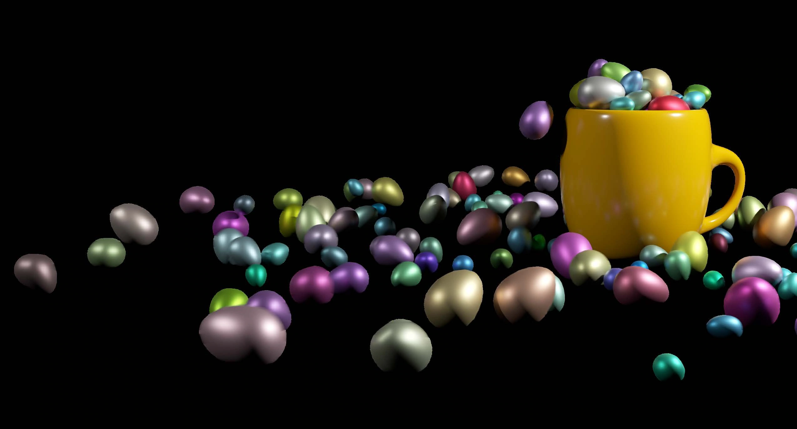
研究问题与分析思路
本文面向熟悉界面设计、第一次阅读 Houdini 工作流的读者。沿用附件的同一个镜头，以用户手上的证据为线索：他已能辨认什么，还需要区分哪两种可能，下一次操作怎样帮助他作出判断。图例来自 SideFX 教材，页码指 PDF 页序。以下是对教材所记录操作和结果的体验走查，作者未在 Houdini 中独立重跑模拟，也没有对创作者开展访谈或计时测试。
读图时可把“节点”暂时理解为一项有输入、有设置、能产出结果的操作。连线说明后一步从哪里取得材料。视口是观看和直接操作三维场景的区域。文中仅在解释可观察的行为时使用公开技术文档。
一、从一个空场景到一只有方向的杯子
先让杯子站稳。使用者建立项目，把工作文件保存在项目目录里，再在视口创建一个管体。鼠标旁先出现待放置的轮廓，按回车便把它放到原点。这是两个相邻、意义不同的时刻。选中“创建管体”确定了要做什么，放置才确定物体从哪里开始。一个没有经验的人可能继续移动鼠标，以为物体还在跟随自己；也可能看到轮廓出现就以为已经建好了。教材此时给的是一个确定的落点。之后旋转视图、调整高度、摆放地面，都可以回到同一参照上核对。这种初始确定性对一段较长的工作尤其有价值。
管体出现后，使用者可以拖动观察，也可以在视口上方的操作栏输入半径、高度、行列数。两种行为很容易被一句“支持直接操作与精确输入”带过。实际的分工要具体些。杯身要不要再宽一点，适合看着轮廓连续比较；周向分成多少面，会影响随后选哪一块面接出杯把，值得看到一个确定数字。若助手接过这份文件，只知道“调到感觉合适”，很难重建当初的面分布。见到十四列、六行，至少能先把接把手的几块面找出来。数字让一个依赖眼力的决定带上了可以传给下一人的信息。
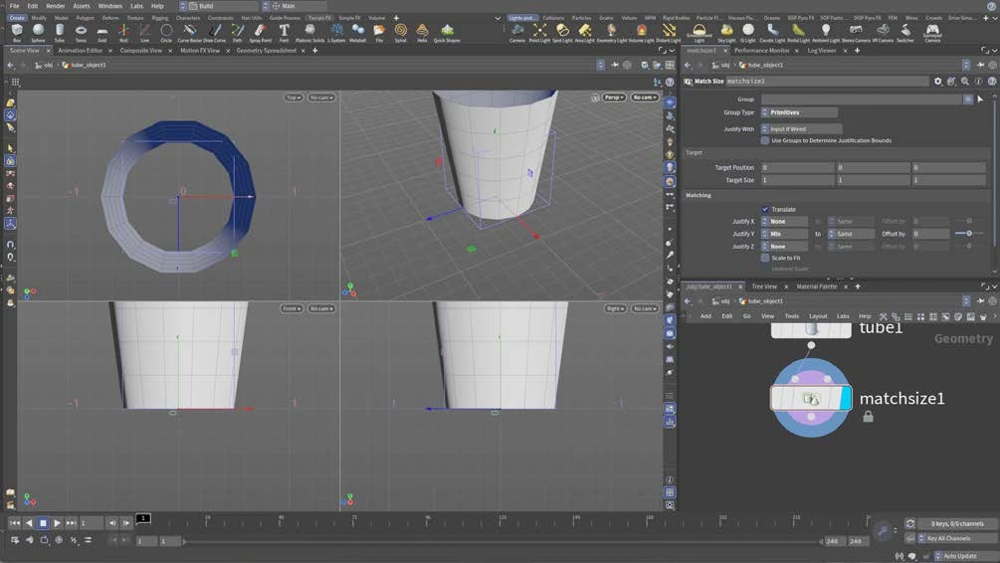
随后把一个透视窗口切成四个视图。第一次接触三维软件的人往往觉得画面变小了，找杯子反而麻烦。只有带着一个具体疑问，四视图才值得占这块屏幕。设想从斜上方看，杯口显得扁了些。是模型真的变窄，还是观察角度让圆变成椭圆？换到顶视图察看横截面，再去正视图看高度，可以让两种解释各自接受一次检查。场景中仍是一件物体，四个方向给同一项修改提供了同时可见的参照。若眼下只需给杯子选颜色，单一透视图恰好更大、更易比较。窗口数量的价值取决于尚未解决的空间疑问。
四个窗口也藏着一个交互难点。同一次拖动可能改变观察方向，也可能拖动选中的几何。前者改变观看条件，后者会改变镜头的制作材料。教材先让人绕行、平移和靠近，再给出重新框住选中对象的操作。找回物体对初学者格外重要：视口中一片空，并不能证明物体已被删除。若网络中的对象仍在，重新对准它便是一种代价很小的检查。先具备这种找回能力，再尝试多方向选面，使用者才有余地探索；否则一次转过头的观察就可能被误判为建模失败。
更微妙的变化发生在从“对象”切到“面”时。刚才选中的整只管体看起来不再被选中，而外形几乎没变。此时操作者进入物体内部，下一击要落在一块面、一道边或一个点上。若按上一秒的理解继续，想移动整只杯子却可能只拉开一小块表面。网络视图里的 Geometry 上下文、场景中的可选部位以及鼠标落下后的高亮，必须一起读。对熟练者，一个数字键足以迅速换层；对第一次操作的人，真正的成本是要在物体形状一模一样时意识到，自己现在有权改变的是另一种东西。
二、拖一下杯把，这次动作以后还能找回来吗
制作杯把时，使用者在杯身一侧选两块面，指定起点和终点，由 PolyBridge 接出一段弯曲的几何。这个动作很容易理解，因为杯把本就有两个接头。软件先等人指定一端，再让人指定另一端，随后给出可调整的桥接结果。对界面设计者，值得留心的是这几个动作的先后。若一开始只出现一整页弯曲方向、分段数与粗细参数，使用者要先把头脑里的形状译成许多数值。先指出从哪儿接到哪儿，便已经排除了大批不合适的形状。参数到这一步才有了明确的作用对象。
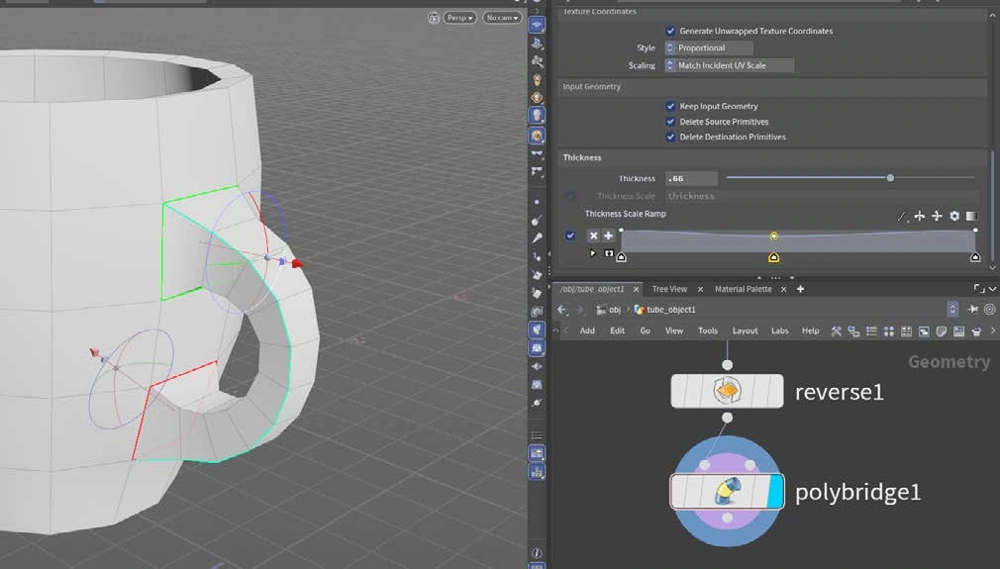
教材接着让创作者调上下接头的走向，又在粗细曲线上压低中段。这里很适合想象一次设计评审。对方说“上面那个弯挺好，只想让手指穿过去的地方再宽些”。如果上一次结果只有整团几何，改稿的人得重新圈点、推拉，并提防另一端被带走。在这个流程里，可以先回到桥接这一步，辨认起点与终点的控制，再尝试中段的粗细。用户仍需要眼力决定何时停下，工作区替他保住的是上次决定留下的入口，以及哪些地方能够分别调整。
在视口中握住把手拖动，一次试验的代价很低，形状能边动边看。到参数面板里阅读起点、终点与曲线，则有另一项收益：改完以后仍看得出方才动了哪一端。工作中常有这样的中断：做到一半去查参考，回来只记得“刚才弯得过头”。肉眼可以辨认形状有异，若想只撤回过头的那一部分，就得知道它落在哪个操作上。节点把当时的动作保存在网络里，参数将同一动作内部还可独立调整的选择留下来。这样，继续工作所需的记忆从“我的手刚才怎么走”缩小为“这段形状由哪一步生成”。
这份便利也有条件。桥接依赖先前选中的面，若很早就改变基础管体的行列数，原先可辨认的接头关系需要再次检查。保有一个节点，能够使创作者找回当初的决定，却不保证换一份输入后其意义仍完全相同。反过来说，这也正是把建模过程显示出来的价值。新方案中若杯把长错地方，可以先看两个接头，再沿上游检查杯身的面，而不用把整条曲线当成一个不可解释的错误。对用户而言，可修改性包含两项不同的能力：找到可以动的地方，以及在动完后辨认原来的参照是否依然成立。
教材第 5 页还留下一个很容易忽略的判断。杯口出现折角，可以在网络中增加真实几何，也可以只让视口按细分外观显示；最后渲染还有自己的细分设置。三种状态在某个观察距离下都可能显得圆滑，付出的代价和影响的交付物却不同。正在选接头时，希望几何足够简单，自己能认得出每一块面。审看近景轮廓时，更关心最后有没有折线。若仅凭当前视口“看起来已经够圆”就交给渲染，前一个任务的判断便被误用于后一个任务。此处体验的难点来自反馈太像，而非反馈太少。界面越能区分显示条件和模型本身，用户越能知道应该把这一笔修改留在哪里。
三、做第二种杯型，用户要保住第一次作出的哪些决定
当杯子已经做完，教程让使用者给它准备另一种起始形状。若从头复制整杯，也能很快得到一红一橙两种造型。眼下看两种成品很方便，下一次想给它们同时修细杯把时，却得在两个版本各做一遍，还要记得哪一个已经修过。在这一课里，使用者只复制初始管体与颜色，让两路结果接入一个 Switch，随后共用填底、接把手和细分等步骤。这样的安排把一个设计问题改得很精确：哪些决定属于方案差异，哪些决定应该由两种方案共同继承？
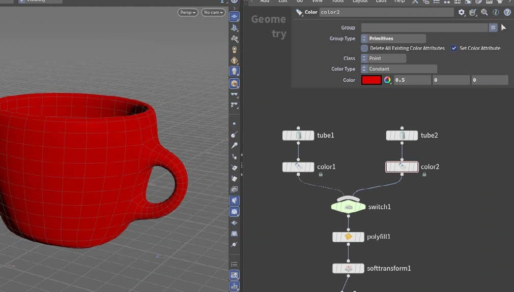
Switch 有两个输入，在参数里选择其中一路。回到视口，看到的是一只完整的杯子。网络替使用者保存了两份候选，视口一次只承担判断一种结果的工作。这个差别决定了它和撤销的用途。评审者临时问“上一款配这个杯把会怎样”，撤销会把中间已经做过的若干操作卷进来；切换输入则把问题限制在起始方案上，后来调过的共同部分仍可参加比较。比较能否说明问题，取决于两次观看有哪些条件相同。这个分叉点相当于把“只换杯型，其余操作共用”写进了可操作的工作区。
仔细读图还会发现，共用后续步骤并不等于已经得到一组严格的单变量试验。教程给另一种管体改了高度，也改了颜色。把两只杯子交换着看，能回答“更喜欢哪套组合”，却不能单凭这次切换说某个视觉差别完全来自高度。对设计评审，这个限制十分实际。若同事想单独评估杯腹的比例，应先让两路使用同一种表面颜色，再去看轮廓。网络在这里提供了检查比较条件的能力：你能看出两条路分别经过什么，决定是否需要再控制一个变量。界面帮助形成可靠判断的方式，是让差异可以被拆开查看。
节点本身也有颜色。第 7 页示范给两条分支着色、给开关换形状、用框收起一组步骤。画面里于是有两种“红”：一种改变杯子的颜色，另一种只把某个节点标红。初次接手的人若把标红理解为这一步向模型写入了红色，读图便会出错。一个可验证的区别是，前一种操作有沿连线传给成品的结果，后一种操作只改变网络的外观。颜色和分组能帮助同伴很快找到“可替换的起始方案”，但真正说明替换范围的是输入在哪里会合、后续从哪里接走。看见好看的分组，还得有办法沿着线验证这组名称说得对不对。
在最后一次改稿中，这个早早留下的开关会再用一次。创作者已经走到灯光和材质阶段，客户又想回到橙杯。此时保留两条候选的收益才充分显现。当初多画的一个小分支，省掉的是事后重建旧方案的工作。不过切回橙杯也改变了糖球会碰到的形状。开关能准确恢复杯型，却不能使根据另一只杯子计算的运动自动成为有效证据。一个设计既可以让局部切换变得便宜，也可能把后续需要重新验证的工作藏在一次轻巧的点击之后。接下来那批糖球，恰好会把这种代价暴露出来。
四、能看见杯子，为什么糖球仍会穿过去
第一批糖球由两份不同的材料生成。一份是球的形状，另一份是杯口上方的一群点，告诉软件每颗球放在哪里。创作者给点写上颜色和大小，再把球复制到这些点上。对于第一次读节点图的人，可以从两个日常问题认输入：把球改成蛋形，应该换哪一份材料？把六十颗糖增到两百颗，又应该回到哪里？这批糖在视口中是一个整体，但修改外形和修改数量有不同的起点。源形状、位置和点上携带的差异能够分别调整，群体才既有变化，又不用逐颗制作。
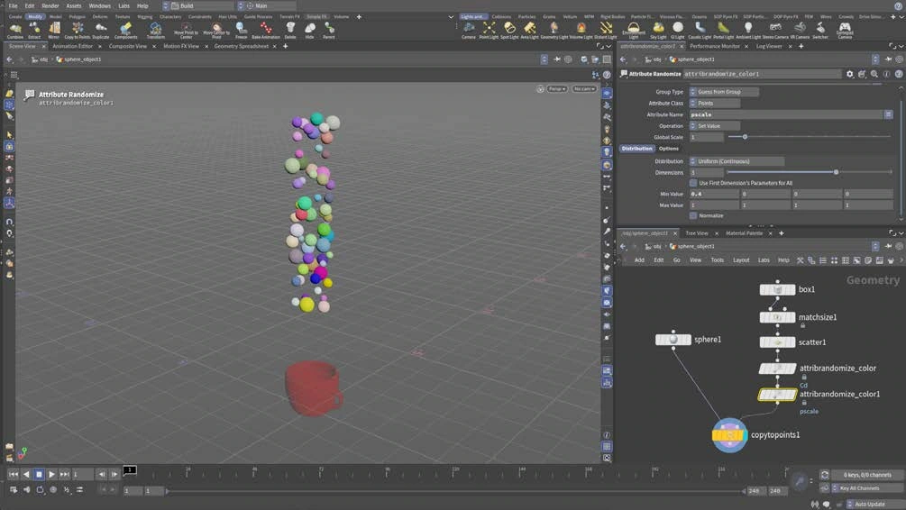
按下播放，糖球落到了地面，却忽略了杯子。眼前的矛盾相当有说服力：球是真的在动，杯子清清楚楚放在它们的运动路径上，地面还能挡住球。人很容易先归因于重量、速度或杯壁太薄。教材明确说明，此刻杯子只作为来自另一网络的参照显示，尚未成为这次模拟的输入。这揭示了三维工作区一个必要又危险的设计。为了对齐模型，创作者需要同时看到当前对象和其余场景；为了让一组修改可控，计算又应当只接收被明确接入的材料。视口故意比当前计算所包括的范围更宽，空间上“在一起”便不足以证明计算上“会发生作用”。
如何用最少的操作辨明原因？观察地面仍然有用。既然糖球会下落且受地面约束，至少说明时间在推进，求解器也工作了。此时改播放速度只会让错误以另一种节奏发生。另一个更有区分力的检查，是去看杯子有没有一条路径把自身形状交给求解器。在网络里提取杯子并把几何接到标为 Collision Geometry 的输入，才是在回答眼下的问题。端口悬停出现的名称很重要：一根线能证明两端已相连，输入的名称还能说明这份几何在其中担任什么角色。同样一个杯子，拿去当作正在坠落的物体，与拿去当作承接糖球的障碍，是两种不同的模拟安排。
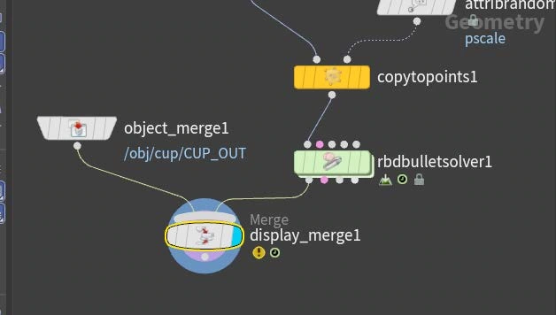
接线后再播放，糖球的表现发生变化。原先直接穿过，如今落在杯口上方，仿佛碰到一块透明盖板。对创作者，这是一条有进展的坏消息。若只把结果分成“成功、失败”，两轮都该算失败；若把观察分成“是否找到杯子”和“碰到的形状是否正确”，第一问已经有了不同答案。由此也能评价产品给出的反馈是否充分。工作区能通过结果的变化帮助人逐步缩小原因，然而它没有在第一眼就把“可见的参照物”和“参与此次求解的几何”解释给所有用户。初学者仍须懂得去网络确认。把这一层学习成本算进去，比称赞连线直观更接近实际使用。
五、透明的杯盖，从哪里取得能说明原因的证据
杯口上方看不见盖子。继续绕着杯子转，能从更多角度证明渲染出来的模型有内壁，却不大可能看见那个挡住糖球的东西。此处需要改变观看的内容。教程第 10 页让人回到第 1 帧，在求解器的可视化设置里打开 Show Collision Shape。屏幕由此多出一份证据：求解器使用的碰撞形状在杯顶也有几何。观看条件只变了一项，创作者却终于能看到此前只能从运动后果推断的原因。若向刚入门的人解释什么是有用的诊断界面，这个例子比许多报错弹窗清楚得多。
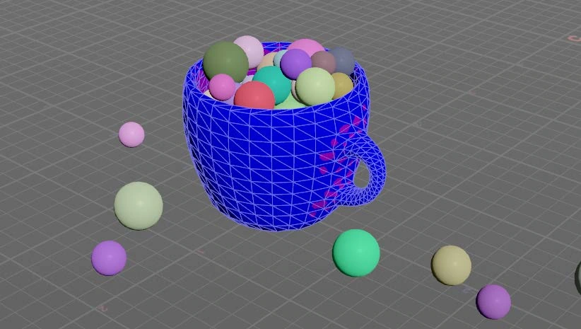
“去看碰撞形状”和“去改碰撞形状”在面板中分属两个决定。打开辅助显示，允许人先观察系统采用了什么；把碰撞形状设置改为 Concave，才改变计算采用的表示，让中空的杯子能用于这次碰撞。分开这两步很有价值。若一个按钮既显示问题又自动修复，用户很快能得到这一次的正确画面，却很难回答究竟是哪项设置起效。现在他可以先验证猜测，再改变表示，最后回到初始帧播放，检查糖是否进入杯子。看到、修改和验证各自有清楚的后果，才有机会把一次偶然修好变成可以重复的判断。
还可以做一个小小的反向推理。假如调低反弹，糖球不再弹得那么高，却依然堆在杯口，那么“碰到东西以后怎样动”已经发生变化，“究竟碰到什么”仍旧未解。教材也调整了反弹参数，这两个决定本来就都可能改善镜头；区别在于它们解决的现象不同。先把碰撞形状显示出来，让人有依据区分接触边界与接触后的运动。这样的反馈比要求用户读懂求解算法节省得多。创作者只需掌握足以改变下一步判断的那一层物体表示，就能把时间花到糖应当跳多高、溢出多少这些真正的创作取舍上。
回到第 1 帧同样是体验的一部分。试比较两种设置，若一次从第一粒糖尚未落下时看，另一次只看已经堆满杯子的末帧，很难知道差别来自参数还是来自观看时刻。把时间位置也固定，使用者才有共同起点可供重演。判断进一步分为几个时刻：最先下落的糖在哪里接触杯子，随后是否进入内部，后来加入的糖是否合理溢出。末帧能证明画面里有糖，却会掩盖中途曾经穿透、跳动或者停在空中的情况。一条播放条在这里支撑的是复现问题的能力，远超过提供一个开始按钮。
当碰撞正确，操作者又要关掉碰撞辅助显示。它使技术表示显形，代价是线框和覆盖色会遮住颜色与造型。若一直保留它，再去判断糖是否足够鲜亮或杯口有没有被挡住，先前有帮助的信号就成了干扰。想评价这个开关，应观察人在两种判断之间来回时，能否知道辅助层当前是否开启，能否在熟悉的位置找回控制。若关掉后糖仍然正常落入，便能亲眼验证“隐藏诊断显示”与“取消碰撞”有不同后果。这个区别用一次回放就可以说清，比记住两个页签名称更可靠。
六、一次模拟被保存以后，拖动时间条的含义变了
糖球落对了，创作者接下来可能反复停在某一帧研究构图。若每次只是为了看杯沿上方的两颗糖就要从头等待计算，这种等待会悄悄改变创作行为：人会少试几个角度，也可能接受一个还算过得去的瞬间。教程把 File Cache 接到求解之后，把运动结果写入磁盘，随后从磁盘载入。此后在已有的帧之间查找动作、比较姿态，使用者面对的是一份已经算好的材料。省下的是每次回头看都要再次付出的成本。工作区把探索动作与审看动作分开，后半段才有可能按镜头画面的需要工作。SideFX 对 File Cache 读写行为的说明
这个便利连带引入了一种新的错觉。参数面板里的数字已经变了，磁盘上那批糖却可能还是昨天的路径。读缓存时，时间条可以非常流畅地给你旧结果。流畅是读取顺利的证据，对内容是否最新毫无说明力。此时再把界面拆成三个可问的问题，也许比一条“保存成功”的提示更有帮助。工程文件保存了哪些制作决定？磁盘缓存覆盖了哪一段运动？当前视口在这一帧读取的是哪份材料？在教程里，工程文件、缓存目录以及 Load from Disk 的取值分别提供线索，三者并不随一次普通保存一起更新。
设想灯光师要求第 47 帧糖果再散开一点。建模者调整上方布点的范围，回到相机看同一帧，画面完全没动。此时“改错了参数”和“仍在读取旧缓存”都很合理。最省返工的检查，往往是先回到求解器输出看运动是否真的改变，再到缓存处确认读写状态，最后才检查舞台加载的文件。各处都能看见一些糖，并不足以定位故障；逐个找到相邻两处中哪一处开始没有更新，才会知道该重新计算、重新保存，还是重新引入。能把结果按制作阶段单独观看，是专业工作区对付这类模糊反馈的一项优势。
缓存也给不同角色创造了交接条件。只想研究打光的人，希望眼前的糖在每次试灯时保持姿态一致。负责模拟的人则希望自己的新方案能尽快出现在镜头里。他们的理想状态恰好有一部分冲突。把运动写成一份有名字、有帧范围的结果，使后者可以继续试验，前者也有可复查的工作基础。这个好处要靠清楚的约定才能兑现。文件仍叫同一个名字时，单看网络里多出的一个方框，接手人不会知道它装的是哪个版本。后来改做蛋形糖时另起目录和文件名，就是把本来藏在记忆里的区别放回可辨认的位置。
七、从制作物体转向拍摄，哪一次移动会改动交付机位
接下来的任务变成布景、选材质与打光。进入 Solaris 后，使用者把杯子引入舞台、加上一块地面，再把两者合到同一场景。杯子在前一阶段是一串如何做出形状的操作，现在要作为一件能被相机拍到、能被指定材质的东西来使用。场景树里的杯子与网络里导入杯子的操作都出现了，各自留下的证据不同。前者可以核对放进舞台的对象究竟叫什么，后者说明它在何处引入、通过哪条线路到达当前结果。若只移除一处显示，去另一处仍有东西可读，并不说明软件重复保存了两只成品杯。
最容易理解这层变化的地方，是材质已经建好，视口却可以什么都没变。创建材质说明舞台拥有一种可用的表面，仍得指定要把它用到哪件几何上。教材里的 Material Linker 把可选材质、规则和几何对象放进同一次操作。对创作者，这相当于把一句完整的制作决定摊在面前：用哪种外观，影响哪些对象。只给一列色板，容易确认想选哪种颜色，却很难发现是否选中了正确的杯子。即使完成绑定，杯子原有颜色仍可能参与最后的外观；看到它保持红色，也不足以推断规则没有生效。界面提供对象关系的检查，才让人不必把每次判断都押在肉眼辨色上。
到了取景，创作者先用自由视角找到能看到杯口和把手的构图，再从当前观看位置建立相机。这是一次代价很低的意图转换。用户已经在视口里找到满意的角度，无须先记三组位置和旋转数值，再去相机面板逐项重填。视口角落出现 camera1 的名称则承担确认工作。此刻最重要的状态差别是“正在透过这部相机看”和“后续导航手势会不会写入相机位置”。前一句确定眼前的来源，后一句确定谁能被这次操作改变。一个角度碰巧与交付机位重合时，两者看上去尤其容易混淆。
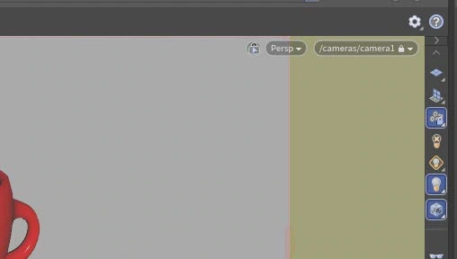
教材在第 12、13 页安排了一次很有代表性的往返。先把观察操作与相机联系起来调机位；检查灯光时又需要绕到别处，之后回到相机视角看效果。把自己放到操作者的位置：如果一拖就改变交付机位，绕到杯后查灯这件事会伤及先前已确认的构图。反过来，若以为自己正在改机位，实际只换了临时观察方向，就会在渲染时找不回眼前的画面。界面上一个很小的控制，决定手势影响的是自己的观察条件，还是别人稍后将接收的镜头。这里读者最值得记住的是操作前先辨认写入对象。教程中的联动、锁定和返回相机应结合具体状态阅读，仅凭“锁”这个字很容易误解。
灯光工具还允许从镜头里看着影子调整光照。传统做法需要先退到场景外找到灯、转动它、回相机检查影子，再往返。此时创作者真正关心的是杯脚旁那块影子落在哪。Houdini 的阴影操作让他在杯上指出参照位置，再在地面上指出想观察或调整的投影方向。它缩短的距离很明确：作出构图判断的地方和检验结果的地方靠近了。这样的操作适合围绕某个镜头做细调；要确认灯离杯子还有多少空间，仍可能需要从外部看全局。工作区若能让两种视角低成本往返，才兼顾了镜头中的效果和场景中的实际布置。
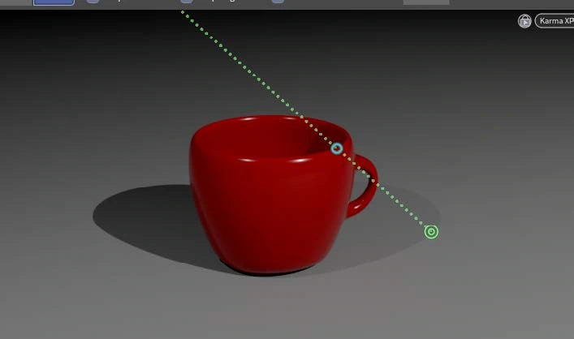
八、审看画面时，怎样判断该回灯光、材质还是纹理
杯子可以顺利入镜之后，一块显得过暗的地面仍可能有好几种原因。灯照得少，材质本身吸收得多，或者地面上的深色纹样恰好占了较大面积，都有可能。此时最难的是决定应去哪里动手。教程安排了两种颇有启发的观察方式。调地面纹理时，可以让二维的纹样与三维场景同时出现。调多盏灯时，Light Mixer 可以暂时单独观察某一盏灯。前一种把同一份材料放到两种条件下看，后一种把一个混合结果的来源逐个分开。两种方法都减少猜测，却服务于不同的判断。
从棋盘纹样开始有个特别实际的好处。规则格子一铺上去，人很快就能看出图案有没有出现、方向是否合理、重复尺度是否合适。直接用最终的砖面细纹，成品或许更漂亮，却很难判断那些若隐若现的纹路是贴图尺度不对，还是灯光本就照不到。教材先在三维与二维视图观察同一纹样，再用砖地、色层与接缝遮罩逐步替换。简化材料给人提供了一个能迅速识别成败的中间状态。此后若二维图已变、三维镜头仍旧，至少可以把调查范围缩到纹理被材料采用和视口更新的那一段。
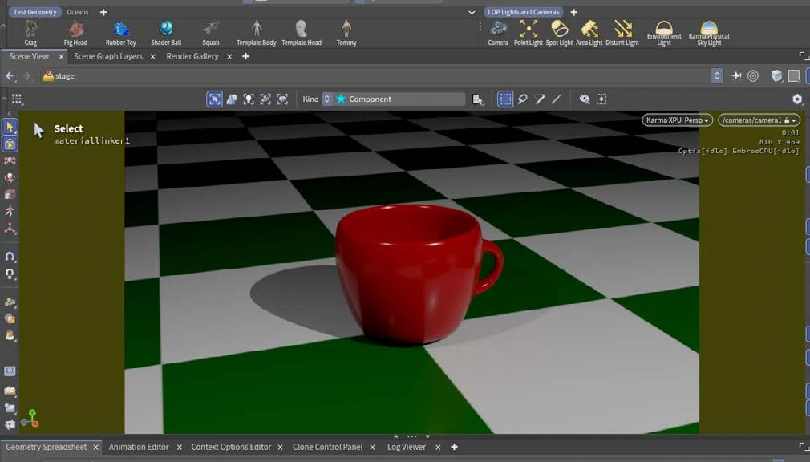
教材还记录了一项不太理想、却值得写进体验分析的情况。换过图案后，视口渲染有时不能及时反映修改，需要重新启动渲染。若作者只展示每次拖动之后立即得到漂亮画面的情况，读者会自然把“画面没动”理解成自己接线出了错。真实工作中，计算出的纹理、材质接收的纹理和视口最近显示的图像可能暂时不同步。一个能主动重启预览的入口提供了恢复办法，也将一部分诊断责任留给创作者。特别是在学习阶段，用户要先知道“已经接对但显示仍旧”是一种可能，才会想到使用它。
光照的疑问则有另一种解法。杯身一边太暗，两盏灯叠在一起看，只知道总效果不满意。混光面板允许暂时单独查看其中一盏的贡献，再切回两盏合看的状态。一次有意义的比较应保持相机和所看帧稳定，只改变正在观察的光源。否则上一张图看的是杯口，下一张图看的却是把手，即便明暗变化很大，也难以把变化归给某盏灯。光源的独看状态需要能被识别并退出。若忘了恢复全部灯，接下来调材质时就会在一个临时照明条件下作决定。
还有一项不容易从最终画面看出的设计收益。灯的原始设置可以留下，临近交付的亮度调整放到后续 Light Mixer 中。评审时只需暂时旁路这层调节，就能重新看早先的设定。这样的分层只有在使用者知道旁路影响哪一段时才可靠。若一按就将灯、材质和相机全都切回旧状态，两个候选结果虽都好看，却无从知道本轮修改贡献了什么。贯穿全篇的一个判断标准在这里再次适用：可以回退的操作究竟保留了多少比较条件？把改动放在对象附近方便精调，把改动放在组合之后则方便按同一镜头比较，两种位置各自对应了一个实际问题。
九、改圆糖为蛋形，怎样知道镜头里换掉的是哪一批
客户在看到成片以后提出改稿。糖果要改成蛋形，镜头要更长，杯子切回橙色。日常语言中的句子很短，在工作区里却不是三个彼此独立的小修改。切回旧杯会改变碰撞边界；改糖的外形需要重新观察运动；延长镜头不仅要能把播放头拖得更远，还需要后段有真实计算并写出的内容。对创作工具最严格的考验常在这里。起稿时顺着教程从上向下走，总能找到下一个空位；改稿时要从已完成的镜头倒推，准确找回最早受影响的决定，并保住此前仍然成立的部分。
先回到作为原型的球，把顶部一点向上提，通过柔和的影响范围使轮廓过渡为蛋形。这个操作在一颗糖上完成，经过前面保留的复制关系，变化可以传给一批糖。此处很值得区分“重复步骤省了多少次”和“对结果仍负有哪些责任”。确实无需逐颗改形，却不能因所有糖都变长了，就确认镜头完成。能落进杯子的圆球与稍长的蛋形，滚动和堆积关系需要重新观看。若杯型也同时换回，原先某颗糖怎样越过杯沿，更不再是新版本的验收依据。设计让形状易于传播，并未取消重新验证运动的必要。
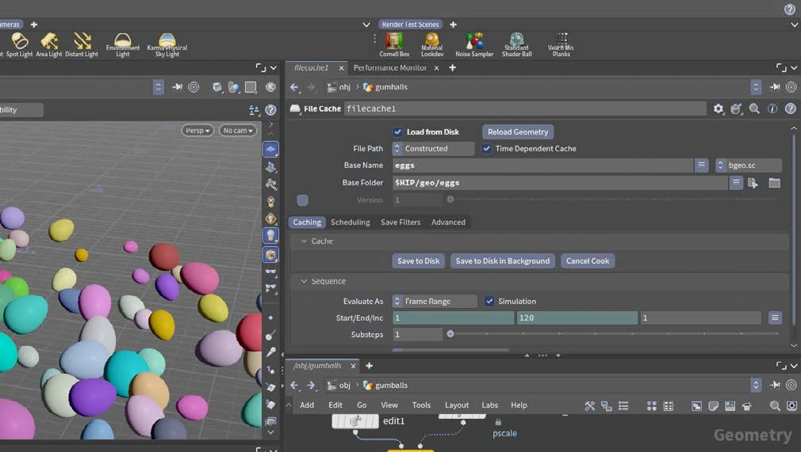
第一版按教材设置到第 72 帧，新版延长至第 120 帧。只检查时间条终点，能够证明用户允许观看更长时间，不能证明第 73 至 120 帧已有新运动。还要检查缓存的起止、保存位置和导出范围。一个接手人若只看到磁盘里多了一个文件名，会有理由问它是新计算的结果、旧版复制品，还是只写出了当前一帧。截图中名称、范围、读盘状态与邻近的保存入口因此值得同时看。它们分别描述“叫什么”“有多长”“当前从哪儿读”和“如何让新结果成为那份材料”，没有一个指标能替代其余三个。
更出人意料的事情发生在舞台上。新模拟已经导出并引入，旧圆糖和新蛋形糖却可以同时出现。对只会用文件思考的人而言，选择了新文件就应当看见新版本，事实却表明他完成的是“引入一份新材料”，还未向场景说明“用它替换哪个位置上的旧材料”。教程把新引用的 Primitive Path 指到原来承接糖果的 /geo/gumballs，新模拟随后在那个位置生效，原材质关系也能继续适用。此处有一个对读者很公平的检查办法。先看文件栏，回答磁盘上读的是谁；再看场景路径，回答它要进入舞台的哪个位置。两行值很像地址，所回答的问题却完全不同。
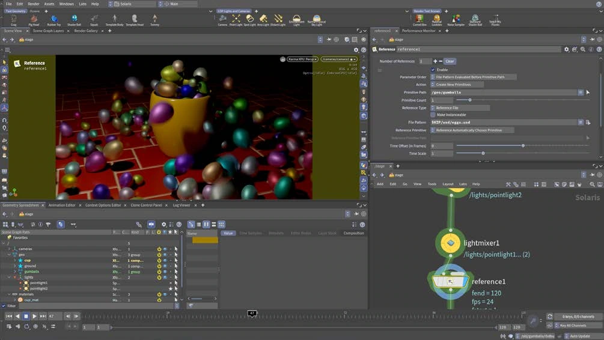
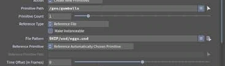
教材第 18 页导出的文件写作 eggs.usd，第 19 页步骤文字另写作 egg_sim.usd，而同页界面图显示的是 eggs.usd。实际判断可以落在一个更可靠的问题上：引用栏选到的文件，是否就是这次成功导出的那一份？确认这一点以后，再独立检查场景路径。两个名字都写对仍可能指错场景对象，一个名称恰好不同也未必意味着流程错误。能把这种模糊说清，就是技术结构在体验分析中最合适的用处。公开的 Reference 节点说明了外部来源怎样被引用到舞台上指定的位置，与屏幕上可见的两项输入互相印证。SideFX 的 Reference 节点文档
从设计上评价这次交接，有收益，也有学习代价。保持稳定的场景地址，能让灯光、构图和材质工作在替换模拟后继续使用。另一方面，地址不会因为面前的文件看起来像新版就自动表达“希望覆盖旧对象”。做界面走查时，最值得观察的失败并非用户输错了一串字符，而是他可能完全不知道还有第二个地址要检查。两批糖同时出现给了很强的目视线索；若两批外形更接近、位置又大多重合，错误就难以用成片发现。这种情况下，场景树和引用面板提供的身份信息，比再放大一倍视口可靠。
十、交付时，看哪份证据才算看完这个镜头
收尾还有一次容易混淆的比较。客户想看降低饱和度或增加高光辉光的效果。此时如果回去逐颗改糖的材质颜色，后续想取消全片调色就得逐处复原。教材把这轮尝试放到图像过滤阶段，在同一帧预览调整前后的镜头。创作者实际改变的是成像之后的外观，模拟的运动和场景中的材质仍能作为比较基础。再往前一步，若满意的是这份镜头外观，最后写出的序列也应使用相应的过滤设置。只在视口中打开一次预览，是取得评审意见的手段；能从磁盘读回这份序列，才说明交付物包括了已经确认的变化。
可以把整次交付压缩成三个不同的问题。问“糖能落进杯里吗”，应当回放、核对接触和后来溢出的过程。问“新糖是否沿用了原来的镜头安排”，应在固定相机下看，并检查舞台引用所指的对象。问“同事收到的版本是否就是我们刚看过的”，则应从指定输出位置读回序列，核对帧范围和最终外观。三者有时都能用一张很漂亮的静帧应付过去，却各有不能由静帧证明的部分。一张图不包含运动的首尾，视口不等于磁盘，新造型正确也不足以证明旧糖已被替换。把这三次检查摆回各自的工作环境，验收才有充分的依据。
回到最初那只杯子。建模时，杯把是两块面之间一条可以回头调的桥。糖球第一次穿过它时，杯子是一份尚未交给求解器的几何。到了相机里，它又成为需要保住构图、接受材质的场景对象。这些身份之所以值得分别存在，是因为创作者在不同阶段要保护的东西不同。他希望能放心绕着杯子看，不意外挪动交付相机；能替换碰撞与运动，不重新做一套灯；也能在新结果看起来可疑时，指出哪一步仍在读旧材料。Houdini 在这段工作中最值得研究的设计，正是把这些原本藏在制作经验里的区别，逐步变成了看得见、可以检查、也允许回头修改的决定。
图像与阅读依据 界面图取自用户提供的 SideFX《Houdini 22 Foundations · Welcome to Houdini》，文档标注为 2026 年 7 月第 3 版。图注列出对应页码，可点开查看原尺寸。文中对操作结果的描述依据教材记录，对参照、反馈和返工成本的解释属于本文的体验分析。